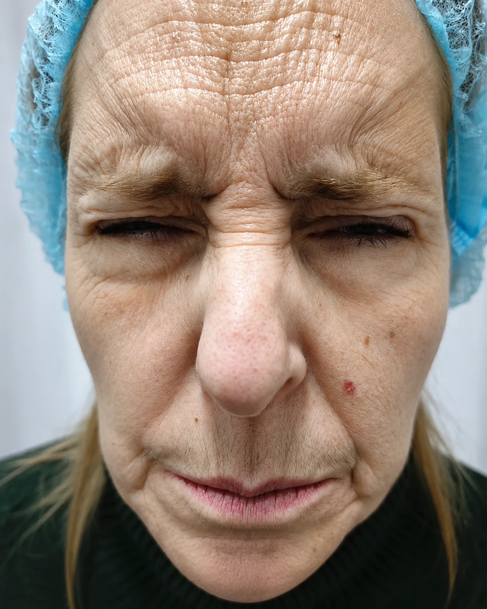
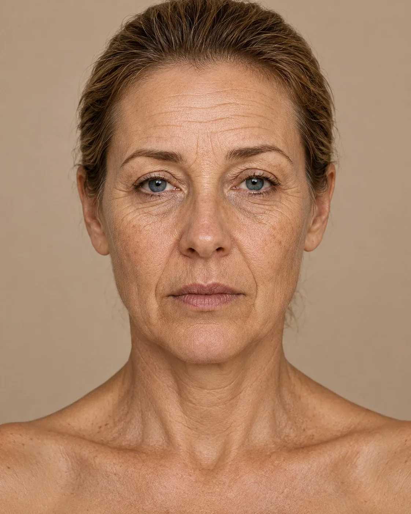
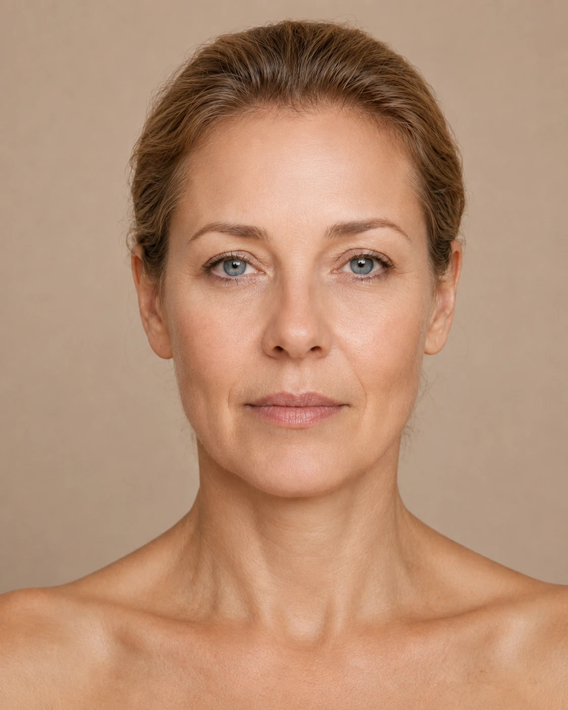
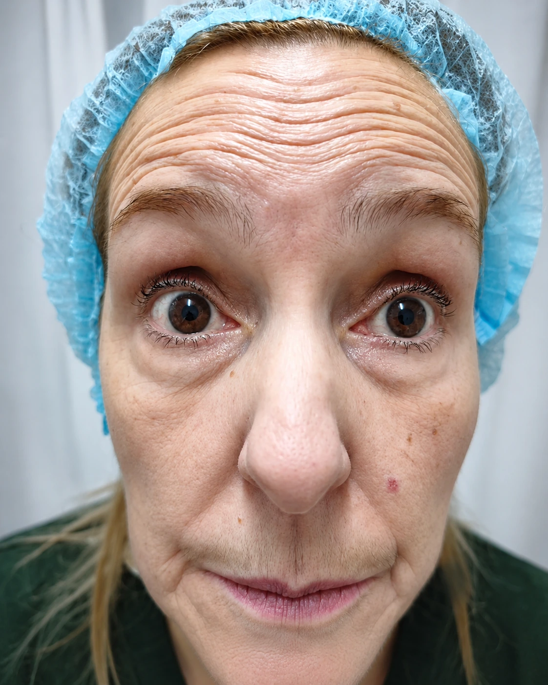
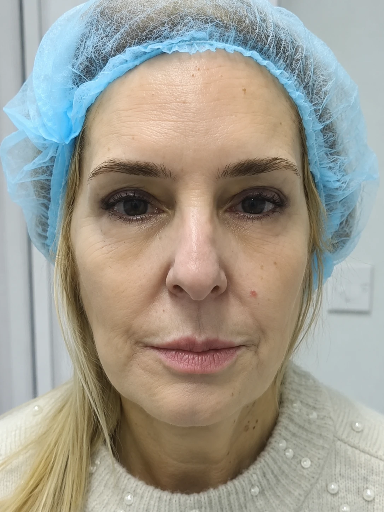

Expresión
Comparativa

Medicina estética regenerativa
Tratamientos faciales, capilares y corporales con valoración médica previa en Montevideo y Maldonado.
Dra. Luisa Cedeño

La Dra. Luisa Cedeño trabaja desde una valoración médica previa, con foco en resultados naturales y en tratamientos que tengan sentido para cada paciente.
La consulta ordena objetivos, antecedentes y expectativas antes de indicar Botox, rellenos, bioestimulación, piel o medicina capilar. La prioridad no es hacer más: es indicar mejor.
Su manera de trabajar
01Primero se evalúan antecedentes, anatomía, objetivo y expectativas reales del paciente.
02La indicación se define con criterio médico: qué conviene hacer, qué esperar y qué no forzar.
03Los tratamientos se planifican por etapas cuando la piel, el rostro o el cabello necesitan evolución.
04Después del procedimiento se dan cuidados claros y se acompaña el resultado.


Valoración integral
La naturalidad comienza con una valoración integral.
Toxina botulínica
Frente, entrecejo y contorno de ojos.
Ácido hialurónico · Bioestimulación
Pómulos, soporte medio y surcos.
Perfilado labial · Mentón · Mandíbula
Equilibrio facial natural.
Hidratación profunda · Bioestimulación
Luminosidad, frescura y textura.
Un plan integral
No se trata de tratar zonas aisladas, sino de comprender el rostro como un conjunto.
Tocá la necesidad que más se parece a lo que querés mejorar. Desde ahí podés escribir directo para una valoración.
Objetivo seleccionado
Rostro descansadoOpciones para suavizar gestos, recuperar soporte o mejorar frescura sin perder expresión.
El catálogo muestra procedimientos puntuales; la indicación final se define en valoración médica.
Caso real destacado
A pocos días de cumplir 60, llegó con un objetivo simple: verse descansada y natural, sin perder sus facciones.


Más comparativas del caso
Cada tarjeta mantiene el antes y el después juntos para que la lectura sea clara.
Deslizá hacia la derecha para ver el resto.
El objetivo no es borrar la expresión. Es mejorar proporción, textura o descanso facial sin perder naturalidad.
Los resultados pueden variar según cada paciente y requieren valoración profesional.

 AntesDespués
AntesDespuésPerfil facial. Definición de contorno y descanso facial manteniendo la naturalidad del perfil.
Mensajes recibidos después de tratamientos faciales, capilares y de piel, editados para leerse claro sin mostrar datos personales.
Botox 3 zonas + NCTF o PDRN de salmón
599USD
Valoración previa, indicación médica y seguimiento de la evolución.
Promo 8 zonas NCTF o PDRN
599USD
Para trabajar hidratación, textura y luminosidad con un plan por etapas.
La agenda se coordina por WhatsApp para confirmar ciudad, disponibilidad y datos finales de la valoración.
Atención con cita previa. La dirección exacta se confirma al coordinar por WhatsApp.
Agenda coordinada por WhatsApp
Cupos por semana según agenda. La sede se confirma al reservar la valoración.
Cupos definidos por semana
Las direcciones exactas se confirman al reservar para evitar confusiones de agenda entre Montevideo y Maldonado.
Lo básico antes de escribir.
Primera orientación por WhatsApp
Te respondemos para orientar tratamiento, sede y próximo cupo de valoración.